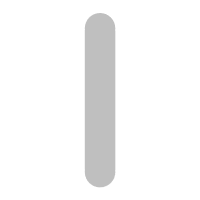
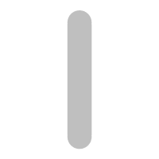

Today's greatest accomplishment


 

Today's greatest accomplishment
End-to-end Machine Learning Framework
PyTorch enables fast, flexible experimentation and efficient production through a user-friendly front-end, distributed training, and ecosystem of tools and libraries.
With TorchScript, PyTorch provides ease-of-use and flexibility in eager mode, while seamlessly transitioning to graph mode for speed, optimization, and functionality in C++ runtime environments.
04.23
There are moments in life when you miss someone so much that you just want to pick them from your dreams and hug them for real!
Dream what you want to dream;go where you want to go;
be what you want to be,because you have only one life and one chance to do all the things you want to do.
May you have enough happiness to make you sweet,enough trials to make you strong,
enough sorrow to keep you human,enough hope to make you happy?
Always put yourself in others’shoes.If you feel that it hurts you,it probably hurts the other person, too.
The happiest of people don’t necessarily have the best of everything;they just make the most of everything that comes along their way.
Happiness lies for those who cry,those who hurt, those who have searched,and those who have tried,for only they can appreciate the importance of people
who have touched their lives.Love begins with a smile,grows with a kiss and ends with a tear.The brightest future will always be based on a forgotten past, you can’t go on well in lifeuntil you let go of your past failures and heartaches.
When you were born,you were crying and everyone around you was smiling.Live your life so that when you die,you're the one who is smiling and everyone around you is crying.
Please send this message to those people who mean something to you,to those who have touched your life in one way or another,to those who make you smile when you really need it,to those that make you see the brighter side of things when you are really down,
to those who you want to let them know that you appreciate their friendship.
And if you don’t, don’t worry,nothing bad will happen to you,you will just miss out on the opportunity to brighten someone’s day with this message.
Your time is limited, so don’t waste it living someone else’s life. Don’t be trapped by dogma - which is living with the results of other people’s thinking.
Don’t let the noise of other’s opinions drown out your own inner voice. And most important, have the courage to follow your heart and intuition. They somehow already know what you truly want to become.
Everything else is secondary.
When I was young, there was an amazing publication called The Whole Earth Catalog, which was one of the bibles of my generation. It was created by a fellow named Stewart Brand not far from here in Menlo Park,
and he brought it to life with his poetic touch. This was in the late 1960’s, before personal computers and desktop publishing, so it was all made with typewriters, scissors, and polaroid cameras. It was sort of like Google in paperback form,
35 years before Google came along: it was idealistic, and overflowing with neat tools and great notions.
Stewart and his team put out several issues of The Whole Earth Catalog, and then when it had run its course, they put out a final issue. It was the mid-1970s, and I was your age.
On the back cover of their final issue was a photograph of an early morning country road, the kind you might find yourself hitchhiking on if you were so adventurous. Beneath it were the words: “Stay Hungry. Stay Foolish.”
It was their farewell message as they signed off. Stay Hungry. Stay Foolish. And I have always wished that for myself. And now, as you graduate to begin anew, I wish that for you.